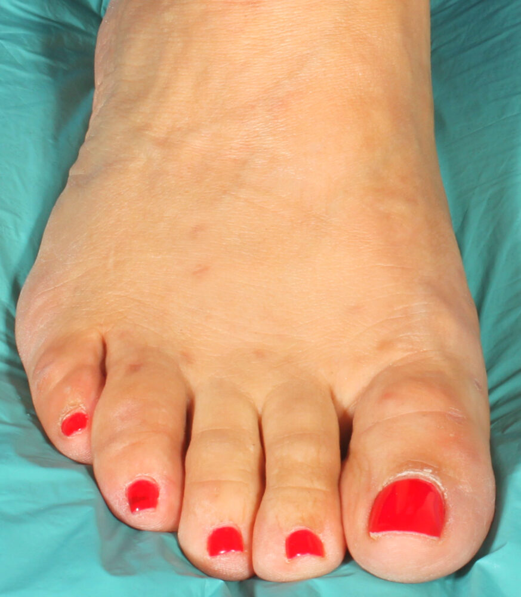

Chirurgia mini-invasiva dell'alluce valgo a Barcellona
Dr. Fabio D'Angelo · Chirurgo ortopedico del piede e della caviglia
Ridefiniamo la chirurgia del piede attraverso innovazione e precisione: un'assistenza avanzata e centrata sul paziente per ripristinare la mobilità, alleviare il dolore e tornare alla vita che ami.
Animazione medica illustrativa di una tecnica chirurgica mininvasiva per la correzione dell'alluce valgo. Contenuto a scopo informativo.
Il Dr. Fabio D'Angelo intervistato dalla televisione spagnola.
Il Metodo SPARE™
Surgery Preserving Anatomy, Restoring, Endoscopically.
Ideato e perfezionato dal Dr. Fabio D'Angelo, il Metodo SPARE™ è un metodo chirurgico innovativo fondato su un principio essenziale: preservare l'anatomia sana ogniqualvolta clinicamente appropriato, ripristinando al contempo la funzione naturale attraverso tecniche endoscopiche e mininvasive avanzate.
Il Metodo SPARE™ è particolarmente rilevante nel trattamento dell'alluce valgo, per il quale molte tecniche correttive tradizionali richiedono un'osteotomia — una procedura chirurgica in cui l'osso viene tagliato e riallineato per correggere la deformità. Grazie alla sua pionieristica competenza endoscopica, il Dr. D'Angelo è in grado di correggere un ampio spettro di deformità dell'alluce valgo preservando l'anatomia sana ogniqualvolta clinicamente appropriato.
Il Metodo SPARE™ integra tecniche avanzate, tra cui la correzione dell'alluce valgo con tecnica TightRope® endoscopica, nell'ambito di un piano chirurgico personalizzato pensato per ottenere il miglior risultato funzionale possibile a lungo termine.
Oltre alla correzione dell'alluce valgo, il Metodo SPARE™ guida l'approccio del Dr. D'Angelo alla chirurgia di revisione, alla ricostruzione dell'avampiede, ai disturbi tendinei, alle lesioni sportive e ad altre patologie complesse del piede e della caviglia.
Perché scegliere il Dr. Fabio D'Angelo?
- Chirurgo ortopedico del piede e della caviglia, formato e riconosciuto a livello internazionale.
- Ideatore del Metodo SPARE™, un approccio innovativo incentrato sulla preservazione dell'anatomia e sul ripristino della funzione tramite chirurgia endoscopica avanzata.
- Pioniere della chirurgia del piede mininvasiva ed endoscopica.
- L'unico chirurgo a eseguire la correzione dell'alluce valgo con tecnica TightRope® endoscopica, che consente di trattare uno spettro più ampio di deformità con questo approccio avanzato quando clinicamente appropriato.
- Docente internazionale, invitato a insegnare tecniche avanzate di chirurgia endoscopica del piede a chirurghi ortopedici in tutta Europa.
- Piani di trattamento personalizzati, calibrati sull'anatomia, lo stile di vita e gli obiettivi di ciascun paziente — perché non esistono due piedi uguali.
- Impegnato nell'innovazione, nella precisione e nell'eccellenza, con un'attenzione particolare alla preservazione dell'anatomia sana, alla riduzione del trauma tissutale e all'ottimizzazione dei risultati a lungo termine.
Pronto a fare il prossimo passo?
Prenota una consulenza con il Dr. Fabio D'Angelo per scoprire se il Metodo SPARE™ è l'opzione giusta per il tuo piede.
Tutto sulla chirurgia del Dr. D'Angelo

Biografia
Il percorso e la filosofia di cura del Dr. Fabio D'Angelo.
Scopri →
Il Metodo SPARE™
Surgery Preserving Anatomy, Restoring, Endoscopically.
Scopri →
Procedure chirurgiche
Dalla correzione dell'alluce valgo alla complessa ricostruzione dell'avampiede.
Scopri →
Patologie trattate
Dall'alluce valgo al neuroma di Morton: individua la tua patologia.
Scopri →
Risorse per i pazienti
Dolore, recupero, guida, ritorno allo sport...
Scopri →Contatti e appuntamenti
Prenota la tua consulenza a Barcellona.
Scopri →